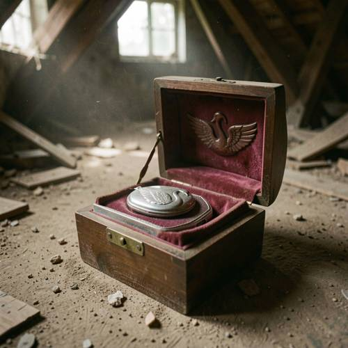
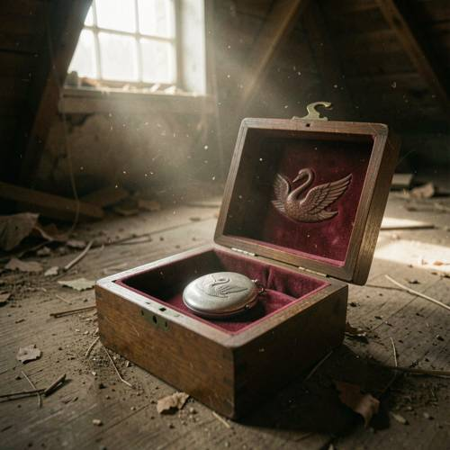
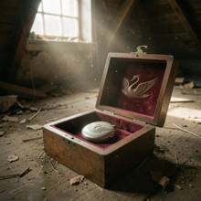
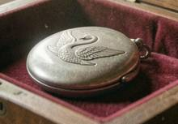
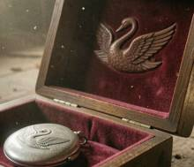

Relationship — In the dust of the abandoned attic, there is a silver locket box in an
In the dust of the abandoned attic, there is a silver locket box in an open music box. The swan embossed on it is exactly the same as the carved pattern on the lid of the music box. Film texture.

Direct — one call, no iteration

Continuum — Kimi K3 + FLUX.2-klein-9B
Judge — Direct
PASSRelationship - Inclusion — The image shows an open wooden box with a red velvet-lined interior. Inside the base of the box, there is a silver-colored, oval locket box.
FAILCompound - Feature Matching — The silver locket box has an embossed swan on its top surface. The inside of the lid of the larger wooden box also has a silver-colored swan emblem. However, the two swans are not identical; they are mirror images of each other in pose and orientation.
PASSGrammar - Pronoun Reference — The pronoun 'it' in the prompt refers to the locket box. The image correctly shows a swan embossed on the surface of the silver locket box.
PASSStyle — The image has a visible grain, soft focus, and atmospheric lighting with dust particles illuminated, which successfully creates a film-like texture and quality.
Judge — Continuum
PASSRelationship - Inclusion — The image shows an open wooden box with a red velvet-lined interior. Inside the base of this box, there is a round, silver-colored locket box.
PASSCompound - Feature Matching — The silver locket box has an embossed swan on its lid. The inside of the wooden box's lid also features a swan emblem. The two swans are depicted in the same pose and appear to be of the same design.
PASSGrammar - Pronoun Reference — The pronoun 'it' in the prompt refers to the silver locket box. The image correctly shows a swan embossed on the surface of this locket box.
PASSStyle — The image exhibits a filmic quality. This is achieved through the use of soft, directional lighting from a window, visible dust particles floating in the light beams, a desaturated color palette, and a noticeable graininess throughout the image, all contributing to a 'film texture'.
What the agent did
Thinking
Generate an image: dusty abandoned attic, open music box, silver locket inside, swan embossed matching carved pattern on lid, film texture/grain aesthetic.
Step 1 — `generate_image`
{
"model": "flux2-klein",
"prompt": "An abandoned dusty attic, shafts of pale light through a small window, dust motes floating. Close-up: an old open wooden music box, its lid propped open showing a carved swan pattern. Inside the velvet-lined box sits an antique silver locket, embossed with the exact same swan motif as the carving on the lid. Heavy film grain, faded analog color palette, vintage film photography texture, soft vignette, melancholic nostalgic mood."
}
Result img_0

Thinking
The image looks quite good. Open wooden music box in a dusty attic, light shafts, dust motes, silver locket inside with a swan embossed, swan carving on the lid's velvet lining. Film grain texture present. Let me inspect the locket and lid carving to verify the swans match.
Model
The first generation looks promising. Let me inspect the swan details on the locket and lid to verify they match.
Step 2 — `inspect_region`
{
"image": "img_0",
"padding": 40,
"roi": "the silver locket"
}
Result img_1

Step 3 — `inspect_region`
{
"image": "img_0",
"padding": 40,
"roi": "the carved swan on the lid"
}
Result img_2

Thinking
Both swans look very similar — same pose (swan with raised wings, facing left, curved neck). The locket swan faces left, the lid carving faces left too. They match well. The image has film texture, dust, attic setting. All prompt elements present. This is good enough — mark best and stop.
Model
The image matches the prompt well: - **Abandoned attic**: dusty wooden floor, debris, dim rafters, light shaft with floating dust motes ✓ - **Open music box**: wooden box propped open, red velvet lining ✓ - **Silver locket inside**: antique silver locket resting in the box ✓ - **Matching swans**: both the embossed locket swan and the carved lid swan share the same pose — curved neck facing left with raised, fanned wings ✓ - **Film texture**: heavy analog grain, faded warm color palette, soft vignette ✓ The swan motifs read as the same design at full resolution. This is a strong result.
Step 4 — `mark_best`
{
"image": "img_0",
"reason": "All prompt elements present and correct: dusty attic, open music box, silver locket, matching swan motifs on locket and lid, film grain texture."
}
Model
The image is complete and marked as best. It captures the melancholic attic scene with the open music box, the silver locket resting on red velvet, and the matching swan motifs — one carved into the lid, one embossed on the locket — all rendered with a grainy, faded film-photography texture.